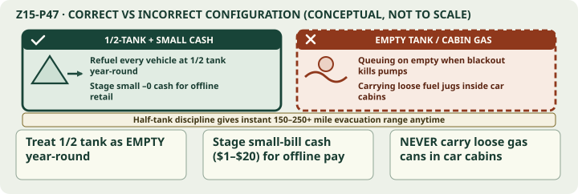

Z15-P47 · Disaster scenarios · New manuscript
Maintain vehicle fuel buffers and cash liquidity when retail payment systems fail
Prevent being stranded at home or on evacuation roads when grid blackouts disable retail fuel pumps and card readers.
When it applies · Pre-storm staging and prolonged multi-week regional disruptions.
Equipment · Vehicle kept ≥half-tank year-round, small-denomination cash reserve, and safe exterior fuel storage limits if generator-equipped.

Actions
- Adopt the simple "Half-Tank Is Empty" rule year-round—refueling every household vehicle whenever gauges near half-full guarantees immediate 150-to-250+ mile evacuation range even if a sudden blackout shuts down every local gas station pump overnight.[D11, D14]
- Keep small-denomination physical cash ($1s, $5s, $10s, $20s) stored securely alongside vital documents so you can purchase food, ice, lodging, or fuel at generator-backed rural stores when broadband card terminals and ATMs stay dark.[D16, D11]
- Never hoard gasoline in unapproved jugs, glass bottles, or inside car trunks/living quarters during storm panics—spilled fuel vapors ignite explosively from static sparks or rear-end collisions.[U04, C15]
Failure recognition · Waiting until a Hurricane/Blizzard Warning hits to queue at empty gas stations with 1/8 tank left and zero cash while card networks fail.[D11, D16]
Verify · Confirm household vehicles routinely refuel at half-tank, small cash bills staged safely, and zero fuel stored inside vehicle cabins/homes.[D11, D16, U04]
Stop or change course · Driving an evacuation vehicle into an active disaster zone below quarter-tank without confirmed open fuel stations ahead risks stranding.[D11, D14]
Evidence and editorial notes
- C15 · NPS · Wildland Fire Safety (current web edition)
- Section: Wildland Fire Safety > Campfires and Stoves · Conditions: Outdoor cooking with portable liquid or canister stoves
Support: Operate stoves on level cleared ground away from tents and dry fuels, cool completely before refueling, and move away from any spilled fuel before lighting.
Limitations: Fuel canisters behave differently in cold weather and high elevation; follow manufacturer limits. · Conflicting evidence: None; aligns with CPSC-C and USFS-FIRE.
Editorial note: Governs stove setup, refueling isolation, and spill failure recognition. · Specialist reviewer: Portable appliance safety and fire prevention
Primary source · checked 2026-11-24 - D11 · FEMA / Ready.gov · Power Outages (current web edition)
- Section: Extended Electrical Outages and Cascading Infrastructure Failure · Conditions: Multi-day grid outages disrupting water pumps, fuel stations, ATMs, and telecoms
Support: Recognize cascading grid dependencies: gas station pumps, payment terminals, cell towers, elevators, municipal booster pumps, and medical devices all lose function during prolonged blackouts—maintain cash, vehicle fuel above half-tank, paper contacts, and backup power before storms.
Limitations: Restoring high-voltage transmission and distribution lines follows critical-infrastructure priority order, not first-reported order. · Conflicting evidence: None; anchors cascading-failure scenario planning in Z15.
Editorial note: Drives cascading infrastructure failure and 30-day resilience cards. · Specialist reviewer: Critical infrastructure and emergency management
Primary source · checked 2026-11-24 - D14 · FEMA / Ready.gov · Evacuation (current web edition)
- Section: Household Evacuation Logistics, Go-Bags, and Shelter Registration · Conditions: Mandatory or voluntary evacuations across multi-hazard disasters
Support: Pre-pack grab-and-go kits (medications, IDs, water, warm layers, chargers, pet gear), maintain at least two independent route options out of the neighborhood, notify out-of-area contacts upon departure, and register status through official shelter/Red Cross Safe & Well channels.
Limitations: GPS navigation apps can route evacuees onto flooded, smoke-blocked, or closed secondary roads; follow live law-enforcement and DOT closures. · Conflicting evidence: None; operationalizes T13 into household evacuation execution.
Editorial note: Core evacuation execution and accountability evidence in Z15. · Specialist reviewer: Emergency management and transportation safety
Primary source · checked 2026-11-24 - D16 · FEMA / Ready.gov · Financial Preparedness and Vital Records (current web edition)
- Section: Vital Documents, Cash Reserves, Insurance, and Post-Disaster Recovery · Conditions: 30-day resilience planning and post-disaster household recovery
Support: Keep waterproof physical and encrypted offline digital copies of IDs, medical lists, prescriptions, insurance policies, deeds, and emergency contacts alongside small-denomination cash so household transactions and assistance claims survive bank/internet outages.
Limitations: Online-only cloud portals are inaccessible during power and telecom outages. · Conflicting evidence: None; critical pillar of prolonged 30-day household resilience.
Editorial note: Grounds documentation, cash liquidity, and recovery staging cards. · Specialist reviewer: Emergency management and household continuity
Primary source · checked 2026-11-24 - U04 · FEMA / Ready.gov · Home Fires (current web edition)
- Section: Home Fires > Smoke Alarms, Fire Extinguishers, and Escape Plans · Conditions: Residential fire prevention during outages and supplemental heating
Support: Test smoke alarms monthly on every level and outside sleeping areas, keep two exits clear from every room, store fuels outside living spaces in approved containers, and evacuate immediately if a fire exceeds incipient containment.
Limitations: Candles and improvised indoor flames dramatically elevate outage house-fire deaths. · Conflicting evidence: None; integrates with CPSC CO-alarm rules (C09).
Editorial note: Anchors outage fire prevention, fuel storage, and exit readiness in Z13. · Specialist reviewer: Fire prevention and residential safety
Primary source · checked 2026-11-24
Source lineage · FEMA Financial Preparedness and Power Outages; new manuscript · Classification · New manuscript.